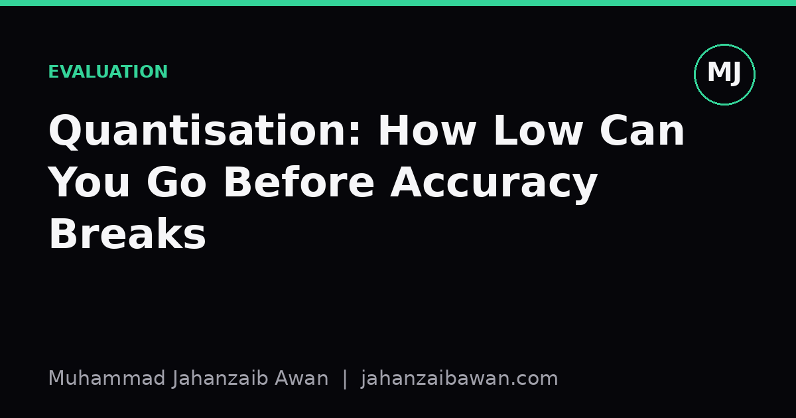

Quantisation: How Low Can You Go Before Accuracy Breaks
Shrinking model weights saves memory and money, but the point where compression turns into corruption is not always where you expect.

Why this question keeps coming up
Every few months someone asks whether a model can be squeezed down to 4-bit weights without losing anything meaningful. The honest answer is: it depends, and the people who give a flat yes or no are usually skipping the evaluation step that actually matters. Quantisation reduces the number of bits used to store weights and sometimes activations, moving from 32-bit or 16-bit floating point down to 8-bit integers, 4-bit integers, or even lower. The appeal is obvious: smaller memory footprint, faster inference, cheaper hardware. The risk is equally obvious once you think about it: you are throwing away information, and at some point the model cannot reconstruct what it needs to make a correct prediction.
What makes this topic worth writing about carefully is that the failure is rarely a clean cliff edge. Accuracy does not sit flat until 4-bit and then collapse. It degrades unevenly across tasks, layers, and even individual examples, and the degradation interacts with how the model was fine-tuned in the first place. If you only look at a single aggregate accuracy number, you can convince yourself that 4-bit quantisation is fine when in fact it has quietly broken performance on a subset of inputs that matter more than the average case suggests.
A worked intuition: where the bits actually go
Imagine a weight matrix where values are fine-tuned to sit in a fairly narrow range, say between minus two and two, with most values clustered near zero and a small number of outliers further out. In 16-bit floating point you have enormous dynamic range and precision, so every one of those values is represented almost exactly. Drop to 8-bit integer quantisation and you typically map that range onto 256 discrete levels. The spacing between levels near zero is small enough that most weights still land close to their original value, so the rounding error per weight is tiny and tends to average out across a layer with thousands of parameters.
Now drop to 4-bit, and you only have 16 discrete levels to cover the same range. Suddenly the gap between adjacent representable values is sixteen times coarser than in 8-bit. A weight that was 0.31 might get rounded to the nearest available level, perhaps 0.4 or 0.27, and that error no longer averages out harmlessly because there are so few levels that many weights get pushed to the same value. This is where outliers become the real problem: a handful of large-magnitude weights can force the quantisation range to stretch wider, which pushes all the small, common weights into even coarser buckets. In practice this is why naive 4-bit quantisation of a model that has not been designed for it often shows a sharp accuracy drop on tasks that depend on subtle distinctions, such as fine-grained classification or generation tasks needing precise calibration, while cruder tasks like simple sentiment polarity barely notice.
The reason fine-tuning changes this picture is that a model adapted heavily to a narrow task often develops weights with a different distribution than the pretrained base, sometimes with sharper peaks or more extreme outliers in specific layers. Quantising a fine-tuned model can therefore behave differently from quantising the base model, which is exactly why you cannot assume results from one setting transfer to another without checking.

Techniques that push the floor lower
Modern quantisation methods do not just chop bits naively; they try to preserve the information that matters most. Calibration-based approaches run a small sample of representative data through the model first, observing the actual range and distribution of activations and weights, then choose quantisation ranges that minimise error for the values that occur in practice rather than the theoretical extremes. Techniques that separate outlier weights and keep them at higher precision while quantising the bulk of the matrix aggressively can hold accuracy much closer to the full-precision baseline, because the coarse buckets are no longer being stretched by a handful of rogue values.
Quantisation-aware fine-tuning goes a step further by simulating the rounding during training itself, so the model's weights adjust to be more forgiving of the precision loss they will face at inference time. This tends to preserve accuracy at bit-widths where post-training quantisation alone would struggle, essentially because the model has been nudged towards a solution that is robust to coarse rounding rather than one that happens to be optimal only under full precision. Low-rank adaptation methods add another wrinkle: when you fine-tune with a small set of additional trainable parameters kept at higher precision on top of a quantised frozen base, you can get much of the benefit of full fine-tuning while keeping the bulk of the model's memory footprint tiny, because most of the weights never need to be touched at high precision at all.
None of these techniques move the theoretical floor to zero. There is always a bit-width below which the representable precision simply cannot capture the distinctions a task requires, and that floor is task-dependent rather than a fixed number you can quote for all models.
The practical takeaway
If you are deciding how aggressively to quantise a fine-tuned model, do not trust a single overall accuracy figure, and do not trust results reported on a different task or a different fine-tuning regime. Build an evaluation set that reflects the actual downstream use, including the harder and rarer cases, not just the easy majority class. Compare full precision against your target bit-width on that same set, using a leakage-aware split so you are not accidentally reusing data the model has already seen in some form during fine-tuning or calibration.
Pay particular attention to per-class or per-slice accuracy rather than the aggregate, because the aggregate can hide a collapse on a minority but important subset of inputs. In my experience the sensible order of operations is: try 8-bit first as a near-free baseline, check whether calibration-based 4-bit holds up on your specific evaluation set, and only push lower with quantisation-aware fine-tuning if the memory or latency constraint genuinely demands it. Treat every claim about a bit-width being safe as a claim about a specific model, task, and dataset, not a universal law, and you will avoid the quiet failures that a single accuracy number so easily conceals.